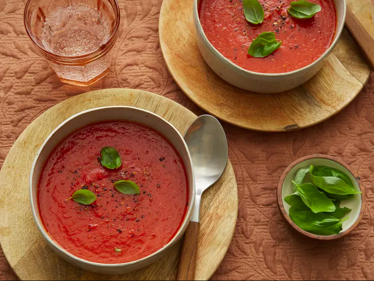

Simple Tomato Soup

Description
This easy tomato soup is my go-to recipe. It's simple and delicious, ready in 30 minutes, and I give leftovers to my
kids for lunch. I usually serve it with rosemary bread for dunking.
Ingredients
- 1 tablespoon unsalted butter or margarine
- 1 tablespoon olive oil
- 1 onion, thinly sliced
- 2 large garlic cloves, peeled and crushed
- 2 (28 ounce) cans whole peeled tomatoes
- 1 cup water
- 1 tablespoon sugar
- ¼ teaspoon celery seed
- ¼ teaspoon dried oregano
- 1 pinch red pepper flakes
- salt and ground black pepper to taste
Steps
- Heat butter and olive oil in a large saucepan over medium-low heat. Cook onion and garlic until onion is soft and translucent,
about 5 minutes. Add tomatoes, water, sugar, celery seed, oregano, red pepper flakes, salt, and pepper. Bring to a boil.
Reduce heat, cover, and simmer for 15 minutes.
- Remove from heat and puree with an immersion blender. Reheat soup until warm and season with salt and pepper.
Return to Main Page